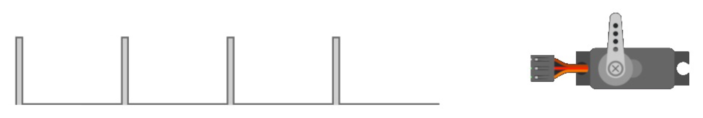
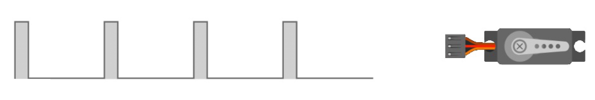
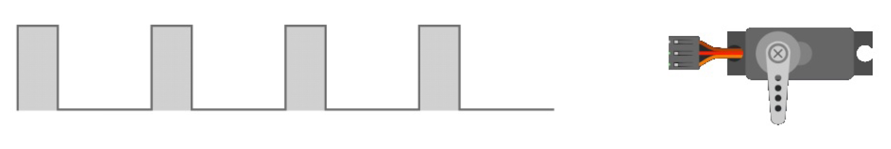
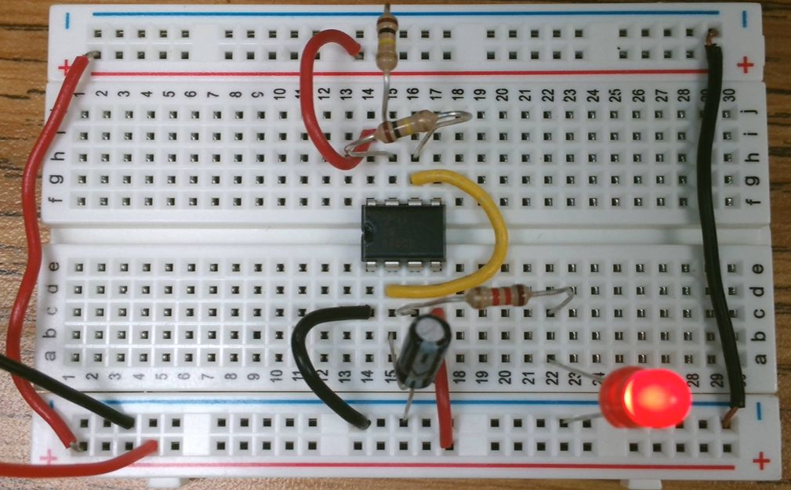
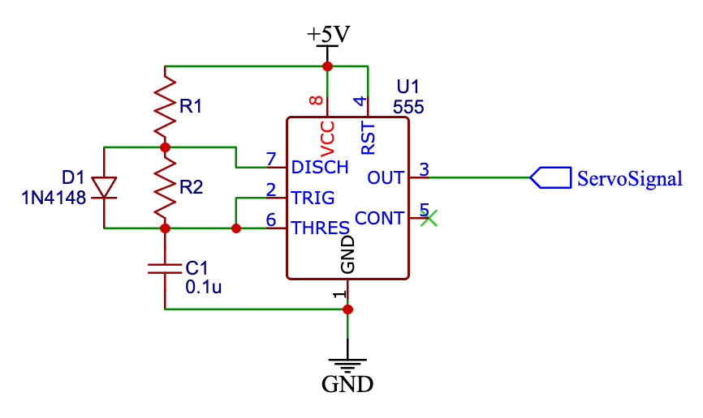
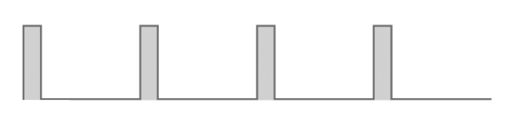

// Precise position · Simple signal control · Built-in feedback
A servo motor combines a simple DC motor with a position sensor and a control circuit that work together to reach and hold a specific angle.
A DC motor is simply turned on and off. When power is applied it spins; when power is removed it stops.
A servo motor is always powered. Power keeps it energized and able to hold position at all times.
The signal repeats about every 20 ms. The length of the HIGH pulse in each cycle tells the servo where to go.



// Watch what happens when the button is pressed and released.
Now that we know what a servo needs, let’s define what our project must do.
To drive a servo, we need a circuit that creates a repeating signal: it pulses HIGH and LOW over and over, and the length of each HIGH pulse controls position.
We used the 555 timer to make lights flash at the start of this unit. That circuit simply turned a load on and off, over and over, at a rate set by resistors and a capacitor.
If we speed up the timing and control the pulse length carefully, that same circuit can generate the signal a servo needs.

Look at this version of the 555 circuit. I've added a diode D1 which separates the charge path from the discharge path. Adding the diode allows R1 to control the HIGH time and R2 to control1 the LOW time independently.

Every cycle of the 555 timer output consists of a HIGH phase and a LOW phase. Together they define how fast and how long the signal pulses.

How often the signal repeats. For a servo this should be about 20 ms.
| Symbol | Formula | Controls |
|---|---|---|
| t1 | 0.693 × R1 × C | Servo position: the HIGH pulse width |
| t2 | 0.693 × R2 × C | LOW time separating each pulse |
| Period | t1 + t2 | How often the signal repeats (~20 ms total) |
Changing the pulse width means changing the charging resistor R1. A larger R1 slows the capacitor charge, making a longer pulse. A smaller R1 allows faster charging, making a shorter pulse.
Here is a basic 555 timing circuit. Use it as your starting point.
Draw a version of the circuit that allows you to quickly switch between two different values of R1.
Your circuit should produce two different pulse widths and move the servo to two distinct positions.
Label R1A and R1B for each position.
Show how the switch connects them. Identify which resistor creates the longer pulse and which creates the shorter pulse.
Build a VEX machine that does something useful using the circuit you just designed.